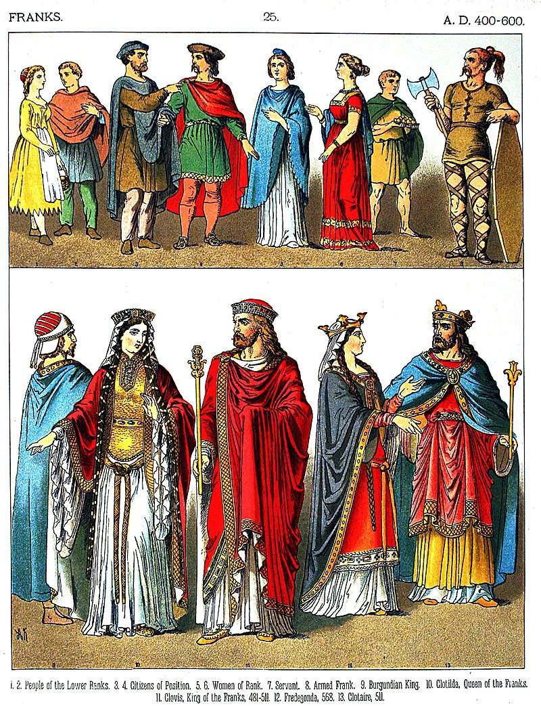
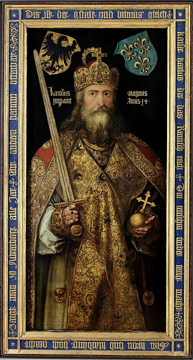
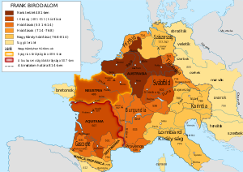

A frankok
A germán eredetű frank törzsek az i. u. 3. században tűntek fel a Rajna jobb partján, és még ebben a században (nyelvük és szokásaik azonosságát megőrizve) két nagyobb ágra, a száliakra és a ripuáriakra váltak szét. A Római Birodalom ekkor támadásaikat (nem minden nehézség nélkül) visszaverte. 356 és 360 között a frank és alemann törzsek rendszeresen betörtek a Rajnán túli római területekre, ekkor Iulianus császár hárította el a támadásaikat.

Nagy Károly
I. Nagy Károly, Martell Károly unokája, Kis Pipin fia, frank király 768-tól. Államát nagy mértékben kiterjesztette, egyesítve Nyugat- és Közép-Európa nagy részét, létrehozva ezzel a Frank Birodalmat. Lombardia királyává koronáztatta magát, majd 800. december 25-én III. Leó pápa a karácsonyi misén Rómában a fejére helyezte a császári koronát, ezzel „római császárrá” (imperator augustus) koronázta őt.

A Frank Birodalom
A Frank Birodalom (482 – 843) az V. században, Gallia északi részén létrejött történelmi állam. A frankok germán törzse Frízia felől, a rómaiak szövetségeseként érkezett a kései Római Birodalomba, és több évszázados államalakulatot hozott létre. Két nagy csoportjuk a száli és a ripuári frankoké. A 9. századra (esetleg még korábban) ez az elkülönítés már értelmét vesztette, de a jogrendszerben jó ideig tovább élt.
